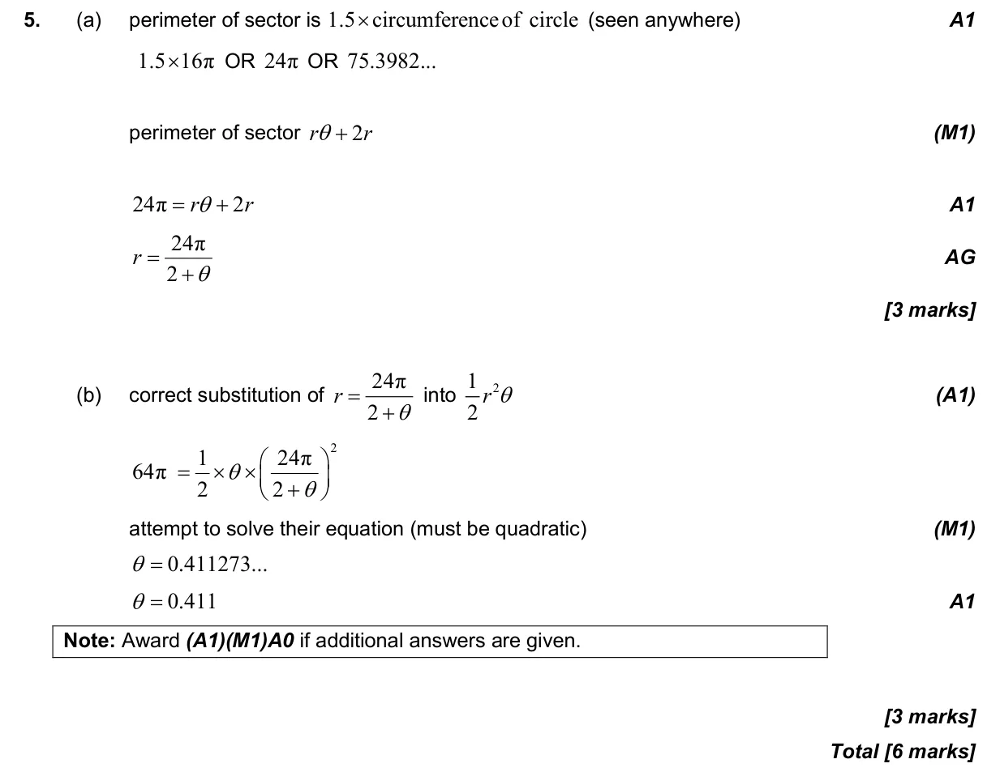

Appears in AA SL P2 Q5AA HL P2 Q3
3.4 Circle: radians, arcs and sectors2.7 Solutions of quadratic equations and inequalities, discriminant and nature of roots
Question

Markscheme

6 marks - Nov P2 TZ3 - Section A - Mathematics: Analysis and Approaches SL
